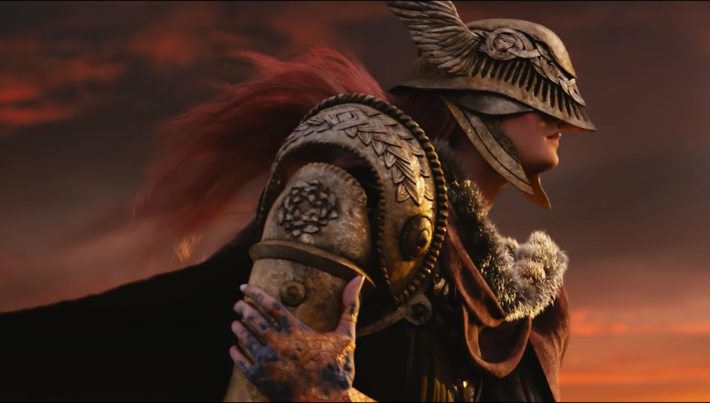

DISEÑO DE VIDEOJUEGOS:
EL PROTOTIPO ✨
Casilda de Zulueta | gatdesoia.es/talks/prototipo
Universitat Politècnica de València | 2 de febrero de 2023
¿QUIÉN SOY?
- Casilda de Zulueta (Casi).
- Autónoma ("mi propia jefa"):
- Artista técnica
- Animadora
- Desarrolladora independiente
- Profesora de animación
- Coorganizadora de la #FemDevsMeetup 💚 (*Alemania, no confundir con FemDevs 💜)

Me preguntáis por etiquetas luego.
PERFIL ACADÉMICO

La primera y última pintura religiosa que habré hecho en mi vida.
- Grado en Comunicación Audiovisual 📼
- Escola Politècnica Superior de Gandia (UPV)
- Intercambio Erasmus ✈️
- Köln International School of Design (TH Köln)
- Máster en Game Development & Research 👾
- Cologne Game Lab (TH Köln)
- Maratones de creación de videojuegos (game jams)
- Global Game Jam 🌍🎮
- Gandia
- KISD/CGL
- Curro
- Fem Devs Game Jam 💚🎮
- Global Game Jam 🌍🎮
PERFIL PROFESIONAL
- Trabajillos durante mis estudios:
- Pagaban entre poco y nada
- Empleada a tiempo completo:
- Artista 3D (generalista)
- Algo de comunicación pública
- Autónoma:
- Primero como artista 3D
- Después me especialicé
- Aumento anual: +50 EUR/día
- Profesora:
- Lo privado paga peor que lo público

Enclosed Encounter (en desarrollo). Fantastic Foe.
HAGO COSAS PORQUE SÍ
Hice como 10 de estas.
- Arte 3D
- Ilustración
- Vídeo
- Diseño web
- Videojuegos
🌹🌹🌹🌹🌹🌹🌹🌹🌹🌹🌹🌹🌹
gatdesoia.itch.io/13-rosas


ÍNDICE
- Prototipos: introducción
- Fases y enfoques del desarrollo
- Estructura de un equipo
- Pensar en géneros de videojuego
- Trabajar con limitaciones
- Concepto y planificación
1. PROTOTIPOS: INTRODUCCIÓN
¿QUÉ ES UN PROTOTIPO?
- Una prueba que demostrará (o no) que el producto final (en nuestro caso, un juego) puede funcionar.
- Inversores privados y públicos
- Editoras (publishers)
- Audiencias
TIPOS DE PROTOTIPOS:
- Prueba de concepto
- (Audio)visual
- Mecánicas
- Interactivas
- Sensitivas (kinestesia, game feel)
- Demos
- Cerradas
- Abiertas
- Vertical slice 🍰
2. FASES Y ENFOQUES DEL DESARROLLO
FASES
- Ideación
- Planificación
- Lista de características (features)
- Clasificación por nivel de prioridad
- Lista de tareas
- Desarrollo
- Testeo y evaluación
- 🔁
ENFOQUES
- Proceso iterativo (= que se repite)
- No existe un guion fijo
- Lo importante es testear pronto y rápido, ver lo que funciona y descartar lo que no transmite las sensaciones esperadas (see what sticks to the wall)
- Historias ↔️ Sistemas
- Ejemplo de progresión narrativa: "Lo siento, Mario, pero la princesa está en otro castillo."
- Ejemplo de desarrollo emergente: los enemigos no-muertos son inmunes a los ataques físicos, pero muy débiles contra cura. Nuestro mago blanco de repente es una unidad de ataque, no de apoyo.
- Disonancias ludonarrativas
- Sucede cuando el desarrollo narrativo entra en conflicto con la experiencia de juego (sin querer).
EL FOCO DE LA EXPERIENCIA
- Cómo quiero que sea esta experiencia interactiva
- No basta con ponerle unos gráficos bonitos que hagan referencia a una idea.
- No basta con tener una historia elaboradísima desconectada de las acciones del PJ.
- Para el prototipo igual solo quiero ensamblar algo en específico para ver si funciona
- combinar dos mecánicas a priori incompatibles, probar un estilo visual diferente, reconstruir algo que ya existe solo para aprender del proceso...
3. ESTRUCTURA DE UN EQUIPO
DEPARTAMENTOS
- Diseño
- Diseño de juego
- Diseño de niveles
- Diseño narrativo
- Programación
- Programación de jugabilidad (gameplay)
- Programación de interfaz
- Programación de gráficos
- Arte y sonido (assets)
- Gráficos de juego (ingame graphics)
- Gráficos de interfaz (UI)
- Animación
- Diseño de sonido
- Música
- Producción
- Producción
- Gestión de proyectos (project management)
ANTIGÜEDAD
- Dirección
- Lead
- Senior
- Junior
- En prácticas
- Principal
ATENCIÓN ⚠️
- El cuello de botella: programación
- Reducir features
- Derivar la responsabilidad de las tareas de implementación de assets a arte y sonido
4. PENSAR EN GÉNEROS DE VIDEOJUEGO
GÉNEROS VIDEOLÚDICOS (¿VIDEOJUEGUILES...? VIDEO GAME GENRES)

Elden Ring (2022) FromSoftware.
- Género como categoría artística basada en criterios estéticos formados por convenciones.
- Cuando una serie de rasgos se repiten e imitan, nace un género.
HAY UN MUNDO MÁS ALLÁ DE LOS SHOOTERS Y LOS PLATAFORMAS
- Diseñar con verbos (player actions)
- saltar, correr, investigar, abrir puertas, mover cajas, conversar, convencer, usar/combinar objetos...
- Definir qué aspectos de vuestras mayores inspiraciones queréis implementar
- mecánica(s), tono, estilo gráfico...
- Buscar referencias fuera del medio.
5. TRABAJAR CON LIMITACIONES
LIMITACIONES TECNOLÓGICAS
- Las máquinas con las que trabajáis.
- Los dispositivos en los que el juego tiene que funcionar.
- La plataforma puede afectar el tipo de audiencia.
TIEMPO DISPONIBLE
- Dormir, comer bien y ver la luz del sol son tareas de obligado cumplimiento.
- Sin experiencia, la mejor opción es empezar con proyectos pequeñitos de un par de semanas* de desarrollo
- (*que fácilmente se convertirán en dos meses).
CAPITAL 💸
- Hay que comer y pagar el alquiler, a veces nuestro sustento tendrá que venir de otro lado, pero no lo deis por hecho de quienes trabajen en vuestro proyecto.
- La mano de obra hay que pagarla o bien con dinero o bien con derechos de propiedad sobre el juego (idealmente, ambas).
- No os sintáis mal por tener parones durante meses, distanciarse también es bueno para retomar el desarrollo más adelante con nuevas perspectivas.
LIMITACIONES AUTOIMPUESTAS
- Paleta de colores limitada.
- Interfaz sin texto.
- Diseñar para consolas fuera de producción
- GameBoy Advance, SNES, PS2, Amiga...
6. CONCEPTO Y PLANIFICACIÓN
CONCEPTO
- ¿Qué se puede hacer?
- ¿Como en qué juegos/géneros?
- ¿Qué sucede?
- ¿Como en qué juegos/películas/novelas?
- ¿Cómo sucede y hay manera de cambiarlo?
- ¿Qué condiciones se dan para ganar/perder (si es posible)?
- ¿Podemos cambiar los acontecimientos?
PLANIFICACIÓN
- Lista de features
- Clasificación por nivel de prioridad
- High/Need
- Mid/Should
- Low/Nice-to-have
- Lista de tareas
- Categorizadas por feature, no por departamentos
- Desglosadas en tareas individuales
KANBAN
- Cuatro columnas:
| To Do 🥚 | Doing 🥣 | Review 👁️ | Done 🍰 |
|---|---|---|---|
| Las tareas por hacer, ordenadas por prioridad | Las tareas en proceso | Las tareas terminadas, a la espera de confirmar que todo funciona | Las tareas completadas, una vez confirmado que funcionan |
- Kanban digitales:
MARS VICE
¡Añádelo a tu lista de deseados!
MI GRANITO DE ARENA
AL INFIERNO CON EL CRUNCH
ORGANÍZATE
- Únete a un sindicato.
- Forma un comité de empresa.
- Considera estructurar tu empresa como cooperativa.